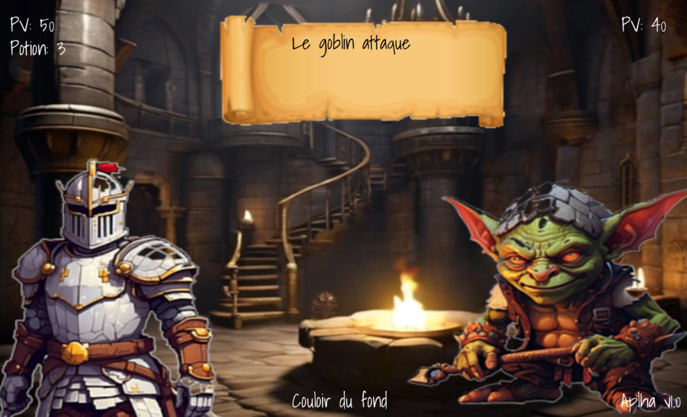

Forgotten Realm — Projet STI2D/Personnel
Projet de STI2D continué en projet personnel

Forgotten Realm — Projet STI2D/Personnel
Projet de STI2D continué en projet personnel
Contexte
Dans le cadre d’un projet de classe en Terminale STI2D, mon équipe et moi avions la possibilité de réaliser un projet supplémentaire pour obtenir un bonus.
Nous avons décidé de développer un jeu vidéo RPG médiéval/fantasy en Python avec PyGame. Par passion, j’ai poursuivi ce projet sur mon temps libre afin d’en faire un véritable jeu.
Contribution personnelle
- Design des personnages et des maps (via IA)
- Design du menu principal, écran de sélection, écran de mort, etc.
- Programmation de la logique du jeu (armes, personnages et interactions)
- Écriture du texte et du scénario
- Développement d’une IA basique
- Et bien plus encore…
Ce que j'ai appris...
- Compétences solides en Python avec PyGame
- Retoucher des images et bases du design (Paint puis IA)
- Utiliser efficacement une IA (prompts précis)
- Bases de composition musicale (BeepBox)
- Organisation du temps, structuration du code, gestion complète du projet